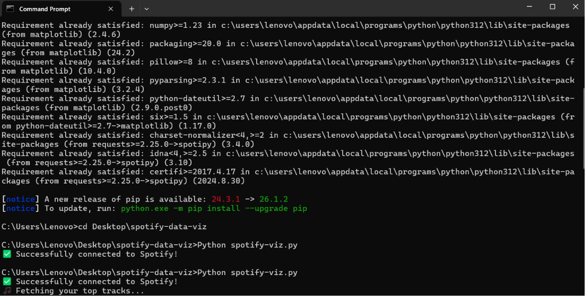

Introduction
Have you ever wondered what your music taste actually looks like? 🤔
We all know that feeling — you're deep into a playlist, vibing, and you think: "Am I more of a chill lo-fi person, or a high-energy dance machine?" Well, what if we could prove it — with data?
In this tutorial, we're going to build a Python script that:
- Connects to your personal Spotify account via the Spotify Web API.
- Fetches your current top tracks and their hidden "audio features" (like how danceable or energetic a song is).
- Plots your music taste on a beautiful scatter plot using Matplotlib!
You'll learn about the following:
- How APIs work and how to authenticate with one using OAuth.
- How to use the
spotipylibrary to talk to the Spotify Web API. - How to use
matplotlibto create and customize data visualizations.
Let's drop the needle and get started! 🎶
What Are Audio Features?
Before we write any code, let's talk about something cool that most people don't know about.
Every single song on Spotify has a hidden set of Audio Features — a bunch of scores (from
0.0 to 1.0) that describe the feel of a track. These are calculated by
Spotify's own algorithms.
Here are some of the most interesting ones:
| Feature | What It Measures | Example |
|---|---|---|
| Danceability | How suitable a track is for dancing | 0.9 = absolute banger |
| Energy | How intense and active a track feels | 0.1 = soft lullaby |
| Valence | How "happy" or "positive" a track sounds | 0.95 = pure sunshine |
| Acousticness | How acoustic (vs. electronic) a track is | 0.8 = campfire guitar |
| Tempo | The beats per minute (BPM) | 120 = typical pop song |
In this tutorial, we'll focus on two of these: Danceability and Energy. By plotting them on a graph, we'll be able to see exactly where our favorite songs sit on the "vibe spectrum." 📊
Think of it like a quadrant:
- Top-right: High energy + high danceability = club bangers 🕺
- Bottom-left: Low energy + low danceability = chill, acoustic vibes ☕
- Top-left: High energy + low danceability = intense rock or metal 🎸
- Bottom-right: Low energy + high danceability = smooth R&B grooves 🎷
Now that we have a mental model of what we're building, let's set it up!
Setting up the Spotify Developer App
To access your data through Python, we need permission from Spotify. We do this by creating a "Developer App" on their platform. It only takes a minute!
- Go to the Spotify Developer Dashboard and log in with your Spotify account.
- Click the "Create app" button.
- Fill in the details:
- App name:
My Data Viz(or whatever you like!) - App description:
Visualizing my top tracks - Redirect URI:
http://127.0.0.1:8080/callback(Note: The URI in your Spotify Developer Dashboard must exactly matchREDIRECT_URIin your code, character for character — including the port number. We usehttp://127.0.0.1:8080/callbackthroughout this tutorial).
- App name:
- Check the box to agree to the Terms of Service.
- Click Save.
You'll now land on your app's settings page. Find your Client ID and Client Secret (click "View client secret" to reveal it).
🔒 Note: Keep these secret! Treat them like passwords. Never share them publicly or commit them to GitHub.
Installing the Libraries
Open up your terminal (or command prompt) and install the two Python libraries we'll need:
bash
pip install spotipy matplotlibHere's what each one does:
spotipy: A lightweight Python library that makes it easy to talk to the Spotify Web API.matplotlib: The classic Python library for creating static, animated, and interactive graphs.
Once that finishes, create a new project folder and a file called spotify_viz.py inside it:
└── spotify_viz.py
Great! Let's write some code. 🐍
Connecting to Spotify
Open spotify_viz.py in your code editor and let's start by setting up authentication. This is the step where our script "logs in" to Spotify on your behalf.
We'll use Spotipy's built-in SpotifyOAuth manager, which handles the entire login flow for us.
Add the following code:
python
import spotipy
from spotipy.oauth2 import SpotifyOAuth
import matplotlib.pyplot as plt
# --- Step 1: Authentication ---
# Replace these with your own credentials from the Spotify Developer Dashboard!
import os
import sys
import random
# Replace these by setting your environment variables!
CLIENT_ID = os.environ.get("SPOTIFY_CLIENT_ID")
CLIENT_SECRET = os.environ.get("SPOTIFY_CLIENT_SECRET")
if not CLIENT_ID or not CLIENT_SECRET:
print("❌ Error: Missing Spotify credentials. Please set your environment variables.")
sys.exit(1)
REDIRECT_URI = "http://127.0.0.1:8080/callback"
# The 'scope' tells Spotify what data we want access to.
# 'user-top-read' lets us see the user's top tracks and artists.
sp = spotipy.Spotify(auth_manager=SpotifyOAuth(
client_id=CLIENT_ID,
client_secret=CLIENT_SECRET,
redirect_uri=REDIRECT_URI,
scope="user-top-read"
))
print("✅ Successfully connected to Spotify!")Let's break this down:
- We import three libraries:
spotipyfor the API,SpotifyOAuthfor login, andmatplotlib.pyplotfor plotting. - We store our credentials in variables. The
scopeis important — it's like asking for a specific permission."user-top-read"means "let me see this user's top tracks and artists." spotipy.Spotify(...)creates our connection object. We'll call itspand use it for all our API requests.
Let's test it! Save the file and run it:
bash
python spotify_viz.pyYour default browser will open, asking you to log in to Spotify and authorize the app. Click Agree.
You'll be redirected to a page that might look broken (something like
http://127.0.0.1:8080/callback?code=...). That's totally normal! Copy the entire URL
from your browser's address bar, paste it back into the terminal, and hit Enter.
If you see ✅ Successfully connected to Spotify!, you're golden! 🎉
Fetching Your Top Tracks
Now for the exciting part — let's pull your actual listening data from Spotify!
We'll use the .current_user_top_tracks() method to grab your top 10 most-played tracks. The
time_range parameter lets us choose the window:
"short_term"— last ~4 weeks"medium_term"— last ~6 months"long_term"— all time
Add this code below your authentication block:
python
# --- Step 2: Fetch Your Top 10 Tracks ---
print("🎵 Fetching your top tracks...")
results = sp.current_user_top_tracks(limit=10, time_range="short_term")
track_names = []
track_ids = []
if not results["items"]:
print("\n❌ No top tracks found for this time range.")
sys.exit(1)
for track in results["items"]:
track_names.append(track["name"])
track_ids.append(track["id"])
print(f" • {track['name']} — {track['artists'][0]['name']}")
print(f"\n✅ Found {len(track_names)} tracks!")We're looping through the API response and saving two things for each track:
- The name (so we can label our graph later).
- The ID (a unique identifier we'll need to look up the audio features).
Run your script again. You should see your recently played top tracks printed in the terminal! Pretty cool to see your data in code, right? 🤩
Getting the Audio Features
Now let's fetch the secret sauce — the Audio Features for each of those tracks. Spotify gives us danceability, energy, and more for every single song.
Add this below:
python
# --- Step 3: Get Audio Features ---
print("📊 Analyzing audio features...")
danceability = []
energy = []
try:
audio_features = sp.audio_features(track_ids)
for features in audio_features:
if features is not None:
danceability.append(features["danceability"])
energy.append(features["energy"])
else:
danceability.append(0.5)
energy.append(0.5)
except spotipy.exceptions.SpotifyException as e:
if e.http_status == 403:
print("\n❌ Spotify has deprecated the Audio Features endpoint for new apps (Nov 2024).")
print(" Your app was created too recently to access this data.")
print(" See: https://developer.spotify.com/documentation/web-api")
sys.exit(1)
raise # re-raise anything else
print("✅ Audio features loaded!")The sp.audio_features() method takes a list of track IDs and returns a list of feature objects.
We're extracting just two values from each: danceability and energy.
At this point, we have three parallel lists:
track_names— the name of each trackdanceability— how danceable each track is (0.0 to 1.0)energy— how energetic each track is (0.0 to 1.0)
That's everything we need to make our visualization!
Creating the Visualization
Here's where it all comes together. We're going to plot our data on a scatter plot using Matplotlib — and style it to look like it belongs on Spotify's own dashboard. 🟢
Add this final block:
python
# --- Step 4: Create the Visualization ---
# Use Codédex dark background and a monospace retro font
plt.style.use("dark_background")
plt.rcParams['font.family'] = 'monospace'
plt.rcParams['axes.facecolor'] = '#030617'
plt.rcParams['figure.facecolor'] = '#030617'
fig, ax = plt.subplots(figsize=(12, 7))
# Plot each track as an 8-bit chunky square
ax.scatter(
danceability,
energy,
color="#FF69B4", # Retro Pink!
marker="s", # Square marker for 8-bit feel
s=200, # Chunky size
edgecolors="#ffffff", # Thick white border
linewidths=2,
alpha=1.0,
zorder=5
)
for i, name in enumerate(track_names):
ax.annotate(
name,
(danceability[i], energy[i]),
textcoords="offset points",
xytext=(random.randint(5, 15), random.randint(5, 15)),
fontsize=10,
fontweight="bold",
color="#F3F4F6",
alpha=1.0
)
ax.set_title(
"🎵 MY SPOTIFY VIBES",
fontsize=20,
fontweight="bold",
pad=20
)
ax.set_xlabel("← CHILL VIBES · · · DANCEABILITY · · · CLUB BANGERS →", fontsize=12, fontweight="bold")
ax.set_ylabel("← LOW KEY · · · ENERGY · · · HIGH OCTANE →", fontsize=12, fontweight="bold")
ax.set_xlim(0, 1)
ax.set_ylim(0, 1)
# Add a chunky retro grid
ax.grid(color="#333333", linestyle="-", linewidth=2, alpha=0.5)
# Thick NES-style borders around the chart
for spine in ax.spines.values():
spine.set_linewidth(3)
spine.set_color('#ffffff')
# Add quadrant labels
ax.text(0.05, 0.95, "🎸 INTENSE", fontsize=12, fontweight="bold", color="#888", transform=ax.transAxes, va="top")
ax.text(0.85, 0.95, "🕺 BANGERS", fontsize=12, fontweight="bold", color="#888", transform=ax.transAxes, va="top")
ax.text(0.05, 0.05, "☕ CHILL", fontsize=12, fontweight="bold", color="#888", transform=ax.transAxes)
ax.text(0.85, 0.05, "🎷 SMOOTH", fontsize=12, fontweight="bold", color="#888", transform=ax.transAxes)
plt.tight_layout()
plt.savefig("my_spotify_vibes.jpg", dpi=150, bbox_inches="tight")
plt.show()
print("✅ Visualization saved as 'my_spotify_vibes.jpg'!")Let's walk through what's happening:
plt.style.use("dark_background")gives us a dark canvas that feels like Spotify's UI.ax.scatter(...)places each track as a dot. The X position is danceability, the Y position is energy. We use Spotify's signature green (#1DB954).ax.annotate(...)adds the song name next to each dot so we know which track is which.- We add descriptive labels on the axes so the chart is easy to read at a glance.
- The quadrant labels (🎸 Intense, 🕺 Bangers, ☕ Chill, 🎷 Smooth) help the viewer instantly understand what each region means.
plt.savefig(...)saves the chart as a PNG file so you can share it with friends!
Let's See It!
Run your completed script one final time:
bash
python spotify_viz.pyA window will pop up showing a gorgeous, Spotify-themed scatter plot of your top 10 tracks! You'll also find
a file called my_spotify_vibes.jpg saved in your project folder. 🖼️
Take a moment to look at where your tracks landed. Are you a high-energy dancer? A chill acoustic listener? Or maybe a little bit of everything? 🎧

Conclusion
Congratulations, you just built a full data pipeline! 🎉
Let's recap what we accomplished:
- Connected to a real-world API using OAuth authentication.
- Fetched personal data from the Spotify Web API using the
spotipylibrary. - Parsed JSON responses and extracted meaningful metrics.
- Visualized that data on a polished, Spotify-themed scatter plot with
matplotlib.
These are real skills that data scientists, backend engineers, and full-stack developers use every single day. And you did it to analyze your own music taste. How cool is that? 😎
🚀 Stretch Goals
Want to take this further? Here are some challenges:
- 🔀 Change the time range. Swap
"short_term"for"long_term"to see your all-time favorites. How different is your vibe? - 📈 Go bigger. Change
limit=10tolimit=50to visualize way more tracks. Does a pattern emerge? - 😊 Plot different features. Try
valence(happiness) on one axis andacousticnesson the other. - 📊 Make a bar chart. Instead of a scatter plot, create a horizontal bar chart ranking
your top 10 tracks by danceability. (Hint: use
ax.barh()!) - 🧑🤝🧑 Compare with a friend. Have a friend run the same script and compare your charts side by side!